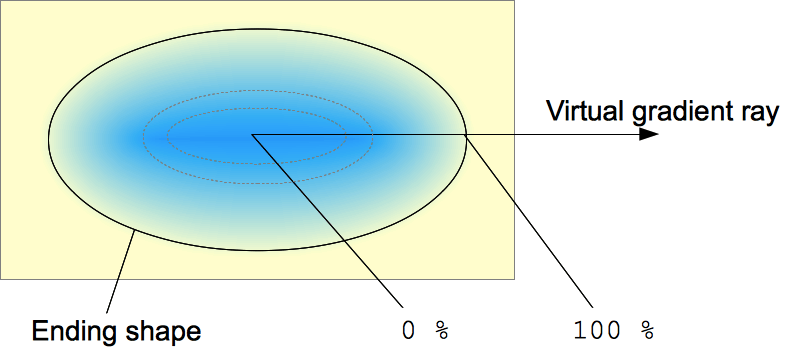

The radial-gradient() CSS function creates an image consisting of a progressive transition between two or more colors that radiate from an origin. Its shape may be a circle or an ellipse. The function's result is an object of the {{cssxref("<gradient>")}} data type, which is a special kind of {{cssxref("<image>")}}.
/* A gradient at the center of its container, starting red, changing to blue, and finishing green */ radial-gradient(circle at center, red 0, blue, green 100%)
A radial gradient is specified by indicating the center of the gradient (where the 0% ellipse will be) and the size and shape of the ending shape (the 100% ellipse).
center.<ending-shape>circle (meaning that the gradient's shape is a circle with a constant radius) or ellipse (meaning that the shape is an axis-aligned ellipse). If unspecified, it defaults to ellipse.<size><size>:
| Keyword | Description |
|---|---|
closest-side |
The gradient's ending shape meets the side of the box closest to its center (for circles) or meets both the vertical and horizontal sides closest to the center (for ellipses). |
closest-corner |
The gradient's ending shape is sized so that it exactly meets the closest corner of the box from its center. |
farthest-side |
Similar to closest-side, except the ending shape is sized to meet the side of the box farthest from its center (or vertical and horizontal sides). |
farthest-corner |
The default value, the gradient's ending shape is sized so that it exactly meets the farthest corner of the box from its center. |
If <ending-shape> is specified as circle or is omitted, the size may be given explicitly as a <length>, which provides an explicit circle radius. Negative values are invalid.
If <ending-shape> is specified as ellipse or is omitted, the size may be given as a <length-percentage> with two values to provide an explicit ellipse size. The first value represents the horizontal radius, the second the vertical radius. Percentages values are relative to the corresponding dimension of the gradient box. Negative values are invalid.
<linear-color-stop>0%, or a length of 0, represents the center of the gradient; the value 100% represents the intersection of the ending shape with the virtual gradient ray. Percentage values in between are linearly positioned on the gradient ray. Including two stop positions is equivalent to declaring two color stops with the same color at the two positions.<color-hint>As with any gradient, a radial gradient has no intrinsic dimensions; i.e., it has no natural or preferred size, nor a preferred ratio. Its concrete size will match the size of the element it applies to.
To create a radial gradient that repeats so as to fill its container, use the {{cssxref("repeating-radial-gradient()")}} function instead.
Because <gradient>s belong to the <image> data type, they can only be used where <image>s can be used. For this reason, radial-gradient() won't work on {{Cssxref("background-color")}} and other properties that use the {{cssxref("<color>")}} data type.
A radial gradient is defined by a center point, an ending shape, and two or more color-stop points.
To create a smooth gradient, the radial-gradient() function draws a series of concentric shapes radiating out from the center to the ending shape (and potentially beyond). The ending shape may be either a circle or an ellipse.
Color-stop points are positioned on a virtual gradient ray that extends horizontally from the center towards the right. Percentage-based color-stop positions are relative to the intersection between the ending shape and this gradient ray, which represents 100%. Each shape is a single color determined by the color on the gradient ray it intersects.
<div class="radial-gradient"></div>
.radial-gradient {
width: 240px;
height: 120px;
}
.radial-gradient {
background-image: radial-gradient(cyan 0%, transparent 20%, salmon 40%);
}
{{EmbedLiveSample('Simple_gradient', 120, 120)}}
<div class="radial-gradient"></div>
.radial-gradient {
width: 240px;
height: 120px;
}
.radial-gradient {
background-image: radial-gradient(farthest-corner at 40px 40px,
#f35 0%, #43e 100%);
}
{{EmbedLiveSample('Non-centered_gradient', 240, 120)}}
Please see Using CSS gradients for more examples.
| Specification | Status | Comment |
|---|---|---|
| {{SpecName('CSS3 Images', '#radial-gradients', 'radial-gradients()')}} | {{Spec2('CSS3 Images')}} | Initial definition. |
Gecko used to have a long-standing bug whereby radial gradients like radial-gradient(circle gold,red) would work, even though they shouldn't because of the missing comma between circle and gold. Also, {{cssxref("calc()")}} expressions were rejected — causing the value to be invalid — when used as the radius component of a radial-gradient() function ({{bug(1376019)}}). Firefox's new parallel CSS engine (also known as Quantum CSS or Stylo, released in Firefox 57) fixed these bugs.